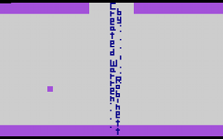

Die Nerd Enzyklopädie 7 - Das allererste Easter-Egg
Als Easter Egg - also Osterei - wird eine versteckte Botschaft, Feature oder Gimmick in einem Programm, Computerspiel und eigentlich überall bezeichnet. Der Kreativität sind keine Grenzen gesetzt. So z.B. der Aufkleber mit dem Intel-Logo auf der CPU-Verpackung, der auf der Rückseite wie das Innenleben einer CPU aussieht [REDDI1].
Das erste bekannte Easter Egg überhaupt befindet sich im make-Befehl der Computer PDP-6 und PDP-10. Führte man den Befehl mit dem Argument love gab es die Ausgabe not war zurück, bevor es die Ausführung fortführte:
$ make love
not war
Moonlander (1973) von Jack Burness von DEC (Digital Equipment Corporation) war das erste Spiel mit einer versteckten Funktion. Bewegte man sich lange genug horizontal, erschien irgendwann ein McDonalds Restaurant. Das Spiel wurde für den GT40 entwickelt und diente eher dazu, die Fähigkeiten des Terminals zu demonstrieren. 1979 adaptierte Atari mit Lunar Lander das Konzept und entwickelte daraus ein „echtes“ Spiel.
Der Begriff Easter Egg wurde allerdings erst in 1979 geprägt und zwar bei eben jenem Unternehmen: Atari. Das Management von Atari hatte ja bekanntermaßen ein schwieriges Verhältnis zu seinen Mitarbeitern (siehe —> Die Entstehungsgeschichte von Activision). Einerseits war man nicht an Gehaltsverhandlungen interessiert, andererseits hielt man es nicht für nötig, die Namen der Entwickler beim Abspann der Spiele zu erwähnen. Heutzutage eine Selbstverständlichkeit. Also die Erwähnung, nicht die Nicht-Erwähnung.
Der Grund für diese Praxis: Man wollte verhindern, dass die Konkurrenz weiß, wen sie bei Atari abwerben muss. Der Entwickler des Spiels Adventure, Warren Roinett, wählte eine ganz besondere Form des Protests: Er verewigte sich mit diesen Worten innerhalb eines Raum, der im Spiel nur schwer zu erreichen war:

Das Easter Egg wurde erst nach dem Weggang von Robinett entdeckt. Der 15-jährige Adam Clayton aus Salt Lake City fand die „geheime Botschaft“ und beschrieb in einem Brief an Atari, welche Schritte notwendig waren, um in den versteckten Raum zu gelangen (ob jemand anders die Entdeckung vor ihm gemacht hat, ist nicht übermittelt). Adam Clayton wurde später selber Software-Entwickler, entwickelte sogar Spiele für die Atari-System und arbeitet heute für Warner Bros Entertainment.
Die Begeisterung seitens Atari hielt sich in Grenzen. Da Robinett das Unternehmen bereits verlassen hat, machte man sich im Quellcode auf die Suche nach dem Easter Egg. Brad Stewart fand die entsprechende Stelle, tat sich aber auch schwer damit, die Nachricht zu entfernen. Weniger aus technischer Sicht, vielmehr aus rebellischem Antrieb. Er hielt mehr davon, die Nachricht durch „Fixed by Brad Stewart“ zu ersetzen [WARR1].
Atari verzichtete schließlich auf die Anpassung des Spiels, nicht nur, weil die Herstellung eines neue ROM-Masters - sozusagen die Vorlage für die Massenproduktion - etwa 10.000 USD gekostet hätte. Steve Wright, damals Direktor für Software Development bei Atari, fand Gefallen an der Idee einer versteckten Botschaft und wählte dafür den Begriff „Easter Egg“. In vielen Spielem (und wie gesagt auch in anderen Produkten) sollten fortan diese kleinen versteckten Botschaften zu finden sein.